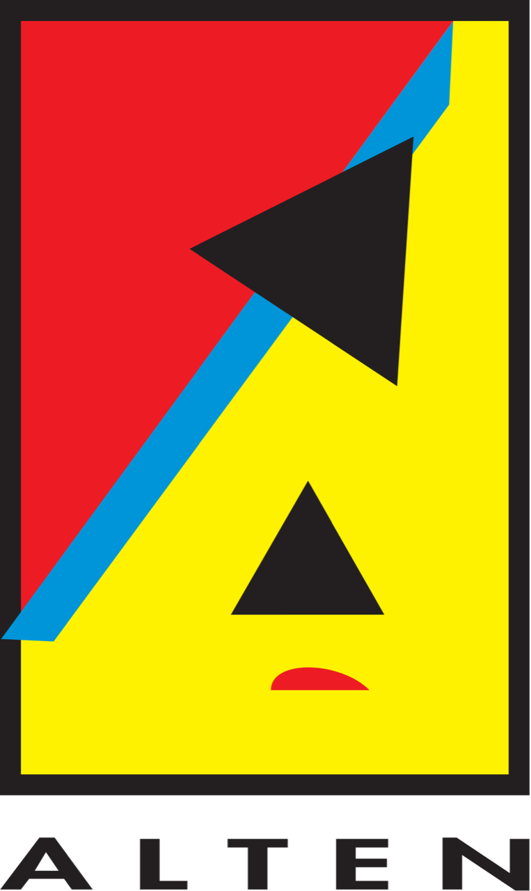
R&D Internship contribution to the Smart Green Supply-Chain Digital Twin
V1 What comes out, per site
Source: IGN orthophoto at 20 cm, BD TOPO footprints, LiDAR HD heights.
https://www.data.gouv.fr/datasets/
Chain: SAM3 segments the roof, shape and area are read off it, then the fine-tuned
YOLO26-seg finds the docks.
V2Focus on Loading apron - Human annotation dataset against work in progress model
truth
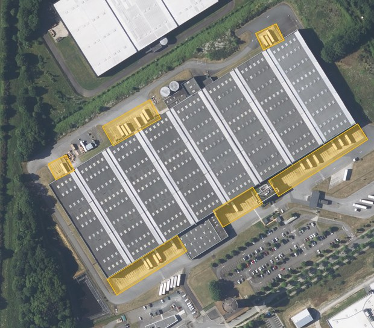
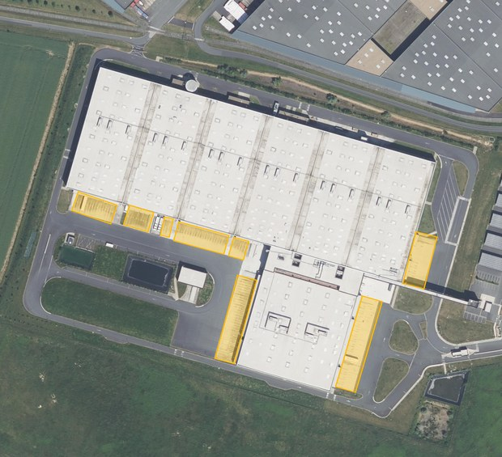
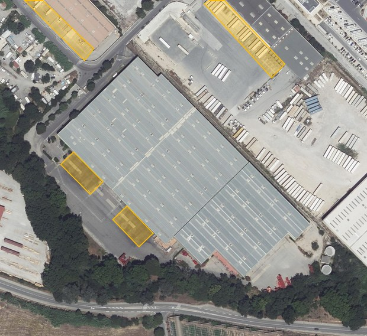
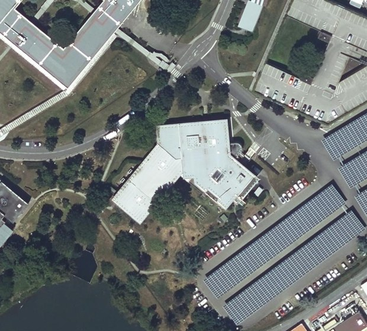
output


V3 Model results scored on dock count, not on mAP


| Run | px | mAP50 | bias | median error | missed | clean negatives |
|---|---|---|---|---|---|---|
| 86 chips | 640 | 0.363 | −35 % | 62 % | 20 % | 89 % |
| 351 chips | 1280 | 0.570 | −11 % | 60 % | 35 % | 93 % |
| 351 chips, kept | 640 | 0.618 | +2 % | 53 % | 22 % | 87 % |
V4 Zone sweep - Full modely Toulouse, 5 km radius, fully automatic
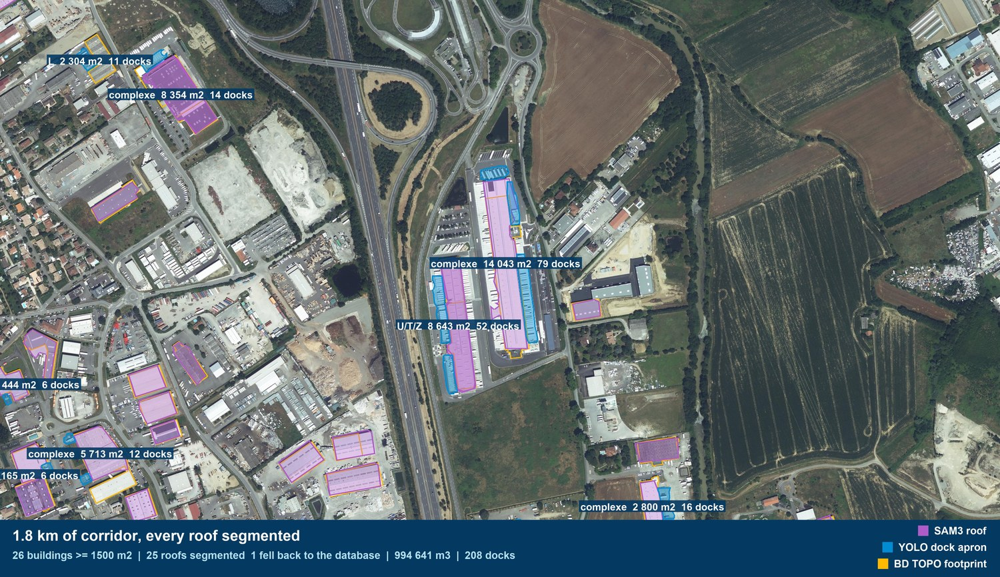
Three sites, three stages: roof segmented, shape and area read from it, then the docks
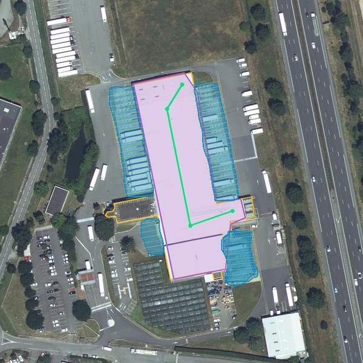
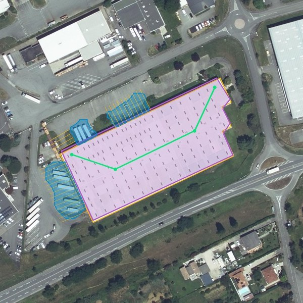
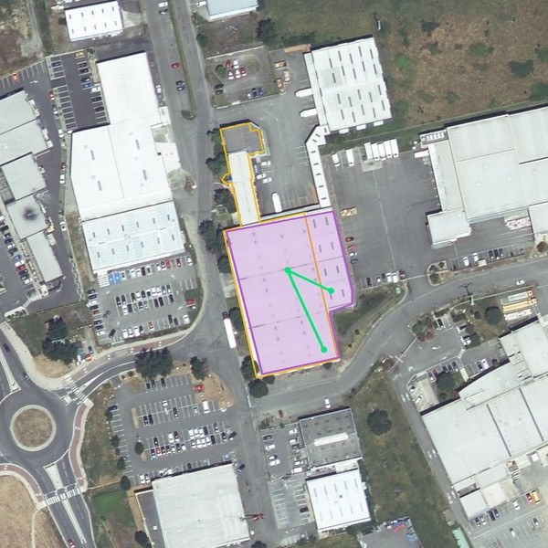
V5 Next
Scale the dataset
A larger annotated set and better training settings. That is the whole of it. Every measured gain so far has come from more annotation, making a cleverer model.Connect it
Push measured volume and dock capacity into the capacity block of SupplyScore, so the twin stops reading a typed-in number, and starts reading the world.S1 Which KPIs feed the Adequacy Score? six computed blocks, four declared criteria
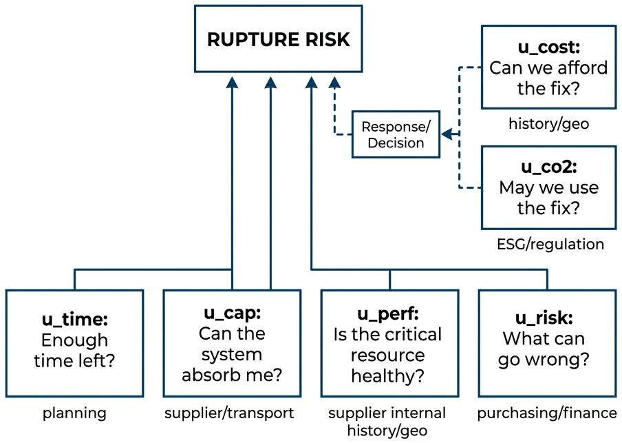
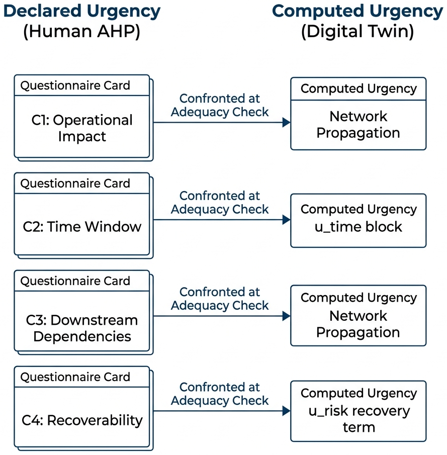
S2 The delivered tool live application, HÉLIOS project


S3 The 2020 to 2022 chip shortage replayed via a Serious Game 8 nodes, 18 turns
Hélios reimagines the chip shortage as a serious game and proof of concept, demonstrating how shortages can be anticipated with sufficient data. Beyond replaying past crises, it can support scenario simulation and decision-making by identifying the most likely outcomes. Using documented disruptions from September 2020 to February 2022 and urgency scores derived from frozen public datasets, the model naturally reveals the foundry as the key bottleneck without being explicitly instructed to do so.
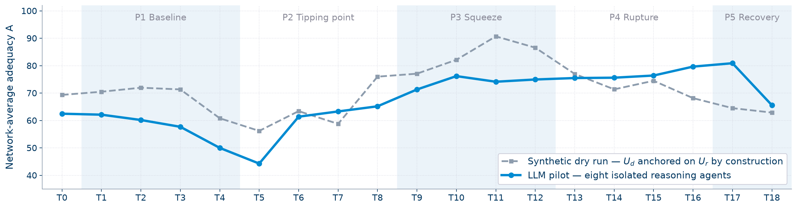
| Measured on the campaign | dry run | LLM agents | pre-set bar |
|---|---|---|---|
| Foundry ranked most critical | 70 % | 70 % | 80 % |
| Urgency contagion on press turns | −0.007 | +0.079 | above calm turns |
| Alarm level reached before the operator | +2.0 turns | −0.7 turns | earlier |
| Hidden risk at the foundry | 0.070 | 0.017 | 0.30 |
| Hidden risk predicts a bad outcome | 0.00 | 0.00 | beat 0.16 |
- Contagion effects were also observed. Nodes without physical disruptions increased their declared urgency on press-driven turns, with some actors reacting several turns before local impacts appeared, while downstream players lagged behind.
- The hidden-risk detector missed events at the predefined threshold, but the underlying signal remained visible: bad-outcome rates increased from 10% to 25% as hidden-risk scores rose, suggesting the threshold should be lowered.